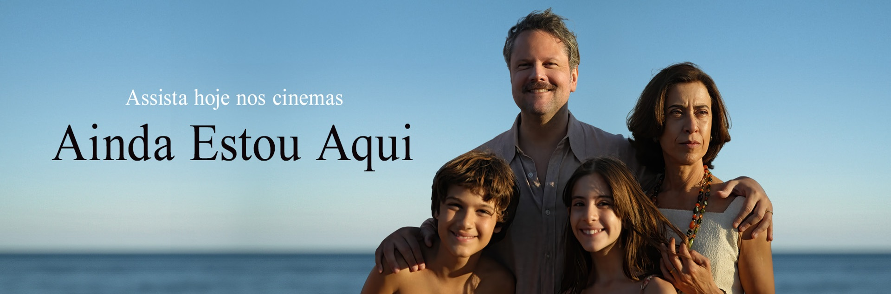

The Globe News
The Globe News
Indicação do filme "Ainda Estou Aqui" ao Oscar 2025
Resumo: "Ainda Estou Aqui", o aclamado drama dirigido por Walter Salles, foi indicado ao Oscar 2025 em três categorias, incluindo Melhor Filme, Melhor Filme Internacional e Melhor Atriz para Fernanda Torres.
O filme brasileiro "Ainda Estou Aqui" foi indicado ao Oscar 2025 em três categorias, incluindo Melhor Filme. A produção se destaca como a primeira do Brasil a receber essa honra. A trama narra a luta de Eunice Paiva para descobrir o que realmente aconteceu com seu marido, desaparecido durante a ditadura militar brasileira. Este feito marca uma conquista histórica para o cinema brasileiro. O filme é uma co-produção entre Brasil e França e foi produzido pela Globoplay, com estreia mundial no Brasil e distribuição em diversos países. Em 2 de março de 2025, a cerimônia do Oscar ocorrerá em Los Angeles, com apresentação de Conan O'Brien.
Voltar para a página inicial